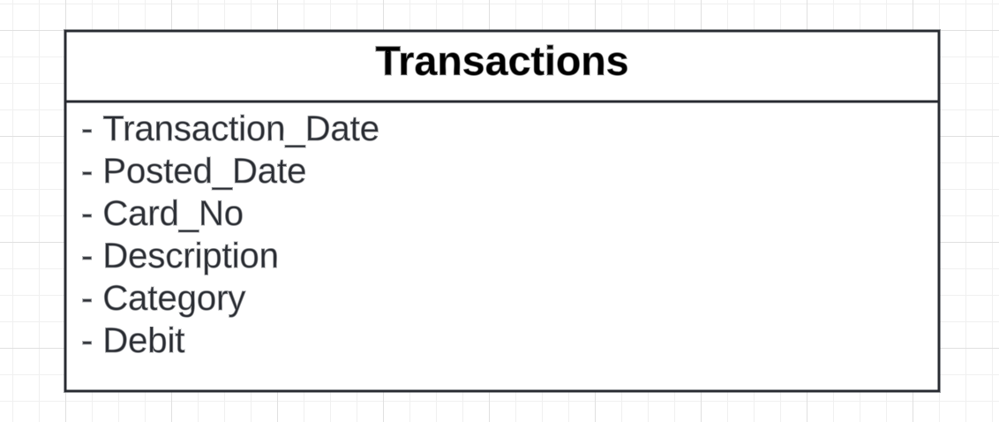
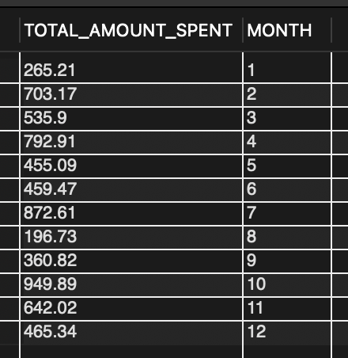
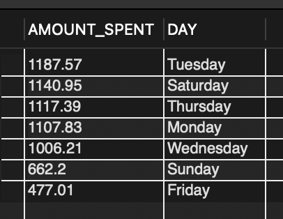
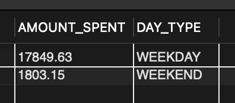
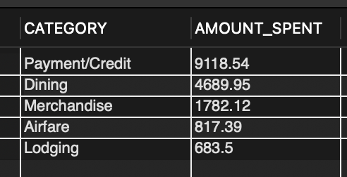
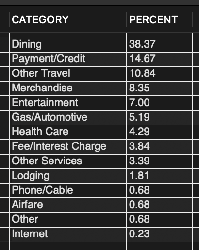
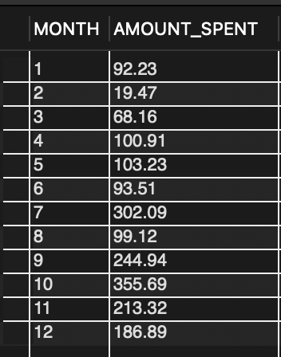
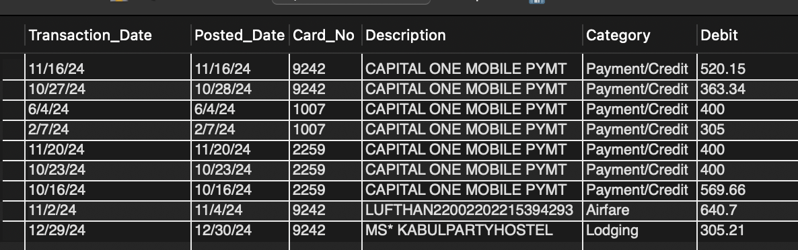

SQL Project: Analyzing Personal Banking Data
Presented by: Bladimir Nunez
Last Updated: February 9th, 2025

Introduction
In this project I extracted my personal debit card transactions in my banking app from 2024. This project aims to explore those transactions and utilize SQL to gain insights on spending trends and patterns,category-wise spending and high value purchases.
Content
I created a MYSQL database that contains one table called 'Transactions'. Within my table I have columns 'Transaction_Date','Posted_Date','Card_NO','Description','Category','Debit'. I did not have to go through a data cleaning process due to the data being cleaned already after my data was exported from my banking application. Below is my table diagram:
Analysis
How much am I spending each month?
I wanted to see how much I spent each month in 2024. I sorted by month starting from January (1) to December (12). I saw a lot of fluctation of the amount of money spent each month. In the year August was my lowest amount at $196.73 spent while October was the highest amount spent that year at $949.89.
What are my peak spending days of the week?
I wanted to analyze what specific days did I spend the most. Were some days more then others? Indeed it was I found that on Tuesday I spent the most amount of money in the year at $1187.57. I was suprised by this thinking that the most would be a Friday or Saturday due to it being the weekend and going out with friends or family would make you spend. Saturday was the second most day that I spent most money in the year.
Do I spend more on weekdays or weekends?
During the week I go to the gym and to work so commuting and buying lunch would be an example of expenses during the week. I found that most of my money that I spent in 2024 was during the week Monday - Friday. Now a goal for me would be to decrease that spending throughout the week.
What are my top spending categories
I looked at the type of categories that I spent the most money on and I used SQL to show me the top 5 categories most of my money went to. It looks like repaying my credit cards was the most money technically spent on repaying something back. It looks like I spent $4689.95 on dining such as going out to eat and ordering takeout. Technically dining would be the number one category due to myself using my credit cards to buy food as well.
What percentage of my total spending goes to each category?
To look more into the data I wanted to see the percentages for each category such as the amount of times I payed for a specific thing. Dining was the number one category where I spent the most amount of times at 38%. 14% of the time was paying my credit card bills. So far in my analysis dining has been the number one category where most of my money went in 2024.
How does my spending by category change over time?
Because I spent a lot of money on dining I wanted to see the trend over the year on how my spending has been month to month on going out to eat. I found that September through November were the months that I consistently spent a lot of money eating out while July was also a high spending month on dining out at $302.09.
What are my biggest transactions?
I wanted to visual if I had any impulse buys for big purchases throughout the year. For me I chose any payments that were greater then 300. I found that most of my big payments were to my credit card bills and a trip I planned towards the end of the year. Those big purchases were my flight ticket and lodging. I was pleased to see that I did not have any big impulse buys throughout the year.
Conclusion
After analyzing my transactions in 2024 I realized I spent a lot on dining. One of my goals now in 2025 is to save more money so I plan to lower eating out and cooking meals at home. Also from this analysis I see that no other category stuck out to me for overspending but I will still need to be aware of how I spend in those other categories. Most of the money I spent was during the week Monday-Friday. Another goal for myself is to see where I can lower those expenses such as bringing homemade lunch to work or not driving so much to then spend on gas. After this analysis I am curious to see how the next year will be on my financial road.
Code
You can find my SQL code posted on my Github page here: Github